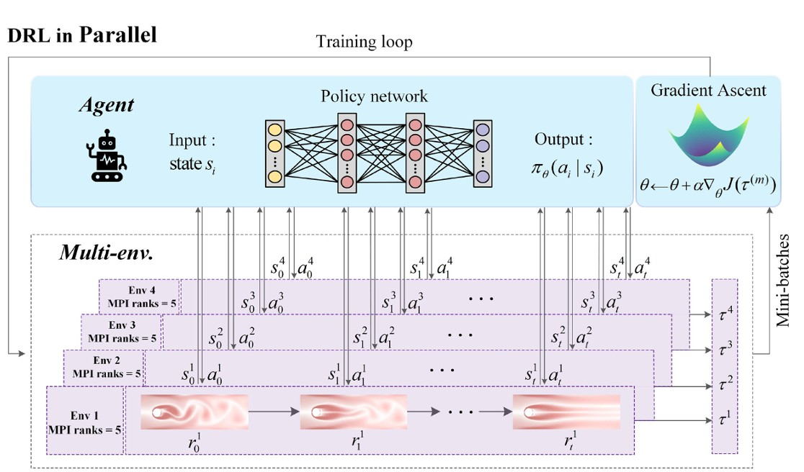
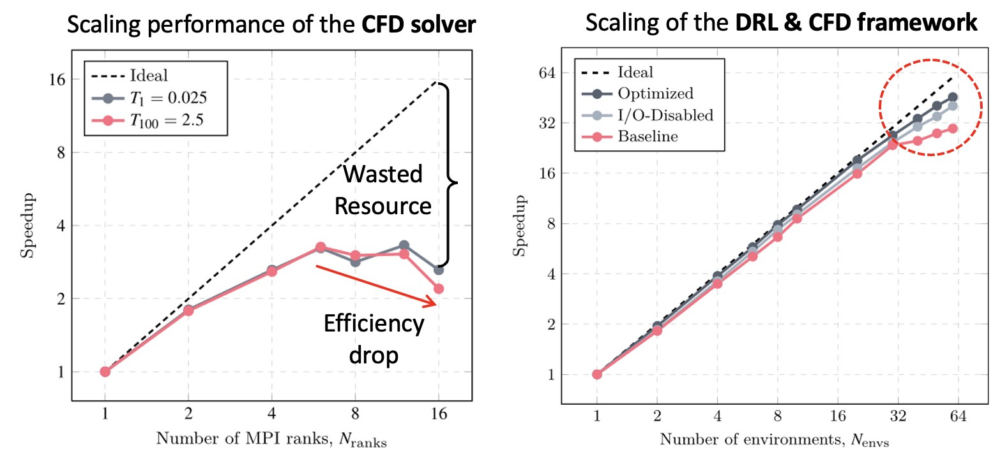
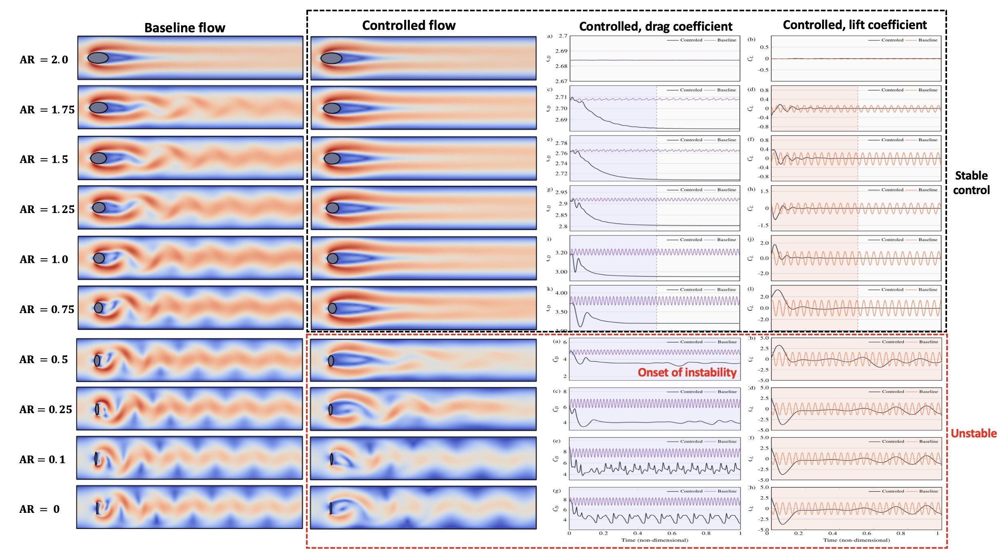
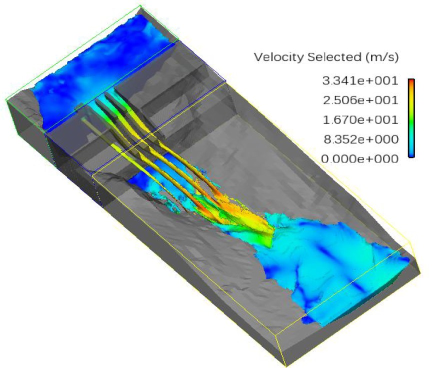
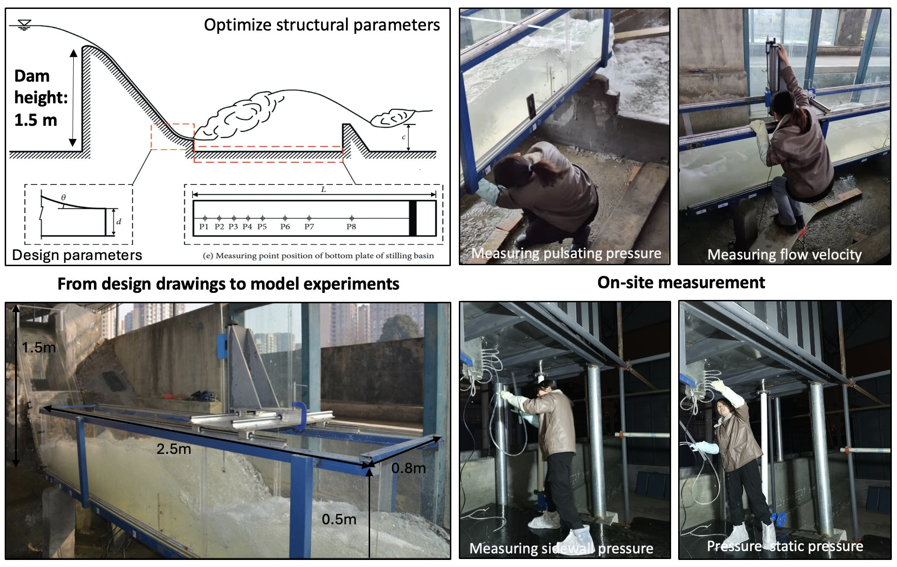

Closed-loop DRL–CFD framework
One policy learns online from many CFD environments at once.
Ph.D. · Shanghai Jiao Tong University · 2026
Deep reinforcement learning for closed-loop active flow control — coupling learning agents to high-fidelity CFD at scale.
My research lies at the intersection of fluid mechanics, machine learning and high-performance computing. I am interested in deep reinforcement learning for active flow control, scientific machine learning for fluid dynamics, GPU-accelerated flow simulation, and real-time closed-loop control of complex flows.
Doctoral research · 2022–2026
My doctoral research focuses on deep reinforcement learning for active flow control, with particular emphasis on flow stabilization, drag reduction, and energy efficiency. My work covers four interconnected areas: efficient DRL–CFD computational frameworks, adaptive control of complex bluff-body wakes, physics-based optimization of synthetic jet actuation, and state-enhanced reinforcement learning for improved flow stabilization. Through these studies, I aim to bridge data-driven control algorithms with fundamental fluid mechanics and develop more efficient, robust, and physically interpretable flow control strategies.
Parallelization strategies, PoF 2024
Tackles the computational cost and scalability of coupled DRL–CFD training.
Robust control across Reynolds numbers, PoF 2024 · Ellipse to flat plate, PoF 2024 · Jet placement at rising Reynolds number, ICHMT 2025
Examines control performance and its limits across Reynolds numbers, body geometries and complex wakes.
Synthetic-jet parameters, PoF 2024 · Energy-efficient control, EAAI 2025 · Blockage and aspect ratio, IJMS 2025
Links actuator placement, flow separation, energy efficiency and geometry–blockage coupling.
State-augmented DRL, IJHFF 2025 · Fully stabilized control, PoF 2025
Improves control of complex flows through richer dynamic state representation, state estimation and reward design.

One policy learns online from many CFD environments at once.

Physics of Fluids · 2024 · Featured
Parallel efficiency 49% → 78%; training 47× faster on 60 cores.

Stable control down to AR 0.75 at under 1% energy.
In preparation · 2026
Each jet senses and acts locally; one policy generalizes across array layouts.
Full citations with DOI.
Deep reinforcement learning for active flow control · 2024–2025
Jia, W., & Xu, H. · International Communications in Heat and Mass Transfer, 166, 109203
Jia, W., & Xu, H. · Proceedings of the ASME 2025 44th International Conference on Ocean, Offshore and Arctic Engineering (OMAE2025), Vol. 4: CFD, FSI and AI, V004T08A025. ASME
Jia, W., & Xu, H. · Physics of Fluids, 36(8), 084113 · Special Collection: Recent Advances in Fluid Dynamics and Its Applications
Jia, W., & Xu, H. · Physics of Fluids, 36(7), 074117
Jia, W., & Xu, H. · Physics of Fluids, 36(4), 043623 · Featured Article
M.Eng. · Sichuan University · 2019–2022
Hydraulic engineering, separate from the doctoral work: numerical simulation and physical model tests of spillway and stilling-basin flows.


W. Jia, M. Diao, L. Jiang & G. Huang · Water, 13(19), 2673 · 2021
W. Jia, M. Diao, L. Jiang & G. Huang · Mathematical Problems in Engineering, 2021, 7246488 · 2021
W. Jia, G. Huang & M. Diao · Sichuan Water Resources, 42(3), 5–7 · 2021 · In Chinese
G. Huang, M. Diao, L. Jiang, C. Wang & W. Jia · Entropy, 24(4), 445 · 2022
G. Huang, M. Diao, L. Jiang, C. Wang & W. Jia · In M. Yang et al. (Eds.), Hydraulic and Civil Engineering Technology VI, pp. 405–416. IOS Press · 2021